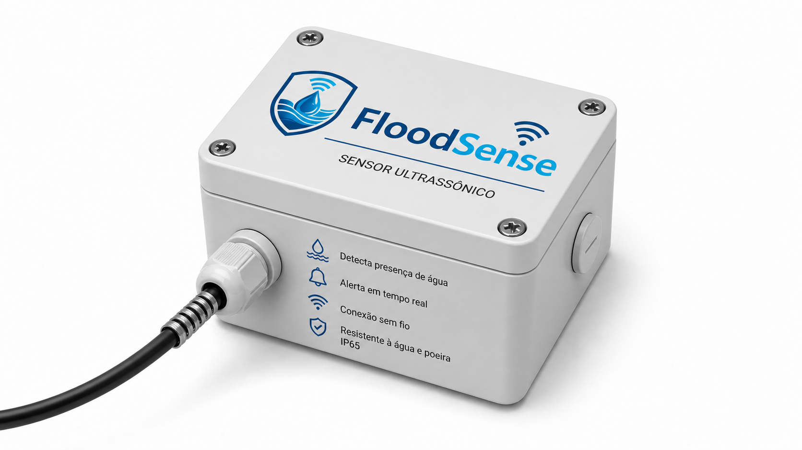
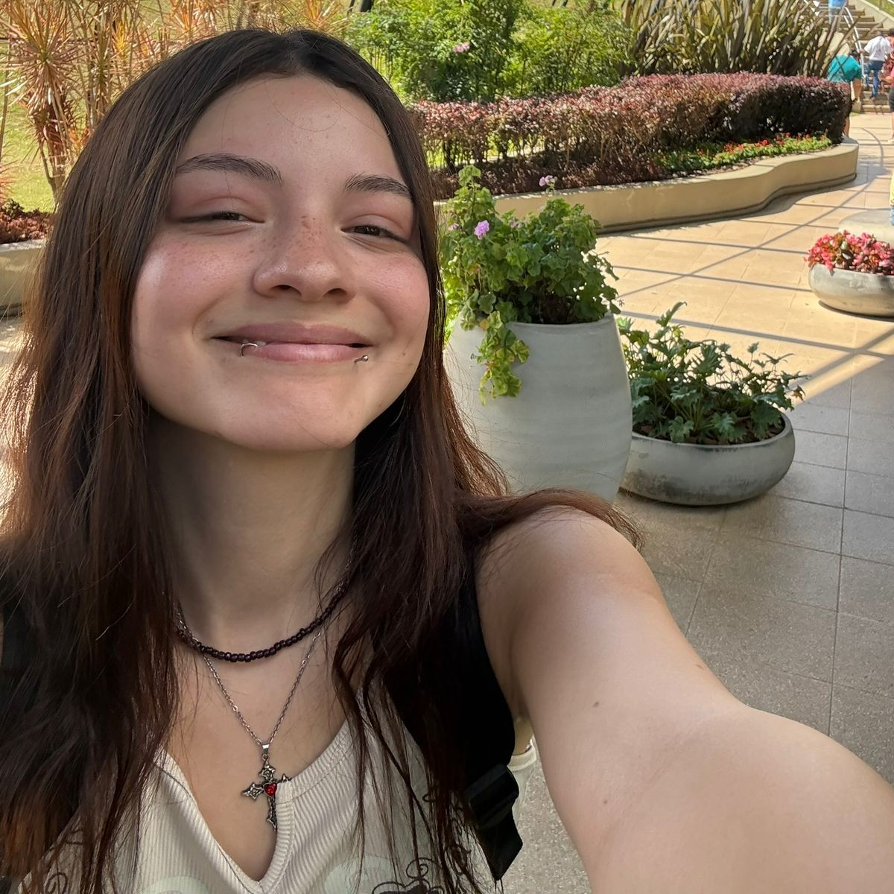

Monitoramento em tempo real do nível da água para reduzir riscos, proteger comunidades e transformar infraestrutura urbana.

A FloodSense surgiu em 2024, após as enchentes no Rio Grande do Sul. Com o objetivo de criar soluções mais eficientes para prevenção de desastres naturais.
Fundada oficialmente em 2025, a empresa desenvolve tecnologias
baseadas na Internet das Coisas (IoT), para monitorar o nível da água em áreas de risco e emitir alertas em tempo real.
Nosso foco é oferecer uma solução confiável, acessível e eficiente, capaz de apoiar tanto órgãos públicos quanto a população em situações
críticas.
Hoje, a FloodSense continua evoluindo e aprimorando sua solução, buscando desenvolver uma plataforma capaz de reduzir os impactos das enchentes e contribuir para cidades mais seguras e preparadas.

Sensores capturam dados em tempo real 24 horas por dia.
Algoritmos analisam variações e detectam riscos de enchente.
Notificações automáticas ajudam na tomada de decisão rápida.
Mede o nível da água em tempo real, identificando possíveis riscos de enchente.
Microcontrolador responsável pelo processamento dos dados e comunicação do sistema.
Exibe localmente as informações coletadas pelo sensor e o status do sistema.
Permite o envio dos dados em tempo real para monitoramento remoto.
Integra sensores, dispositivos e sistemas inteligentes em uma única plataforma.